All GUI APIs. Look for methods here and make sure you've got the correct parameters
Previously we've been creating a static method to create a GUI and a object to do the ButtonHandling. This is an alright way of doing things, but our button presses can't really affect any part of the GUI beyond the button that was pressed. We can solve this by creating objects that have all of their GUI elements as instance fields.
For example: Check out the following class that's meant to be an object. Notice that all of the instance fields are the necessary GUI objects that make up the interface.
import sacco.gui.*;
public class DiceRoller
{
private SFrame frame;
private SLabel label;
private SButton button;
public DiceRoller()
{
frame = new SFrame("Roll Dice");
frame.setLayout(new BorderLayout());
button = new SButton("Roll");
frame.add(BorderLayout.SOUTH, button);
label = new SLabel("6");
label.setFont(new Font(45));
frame.add(BorderLayout.CENTER,label);
frame.pack();
}
public void launch()
{
frame.setVisible(true);
}
}
The constructor, which is in charge of setting up the instance fields with their starting values, is now in charge of constructing each of the SFrame, SButton, and SLabels. There is also a 'launch' method, which will cause the SFrame to display.
We've created our GUI object, but it still needs a static method to construct it and get it started. Create a class named Runners, which has the following method:
public static void dice()
{
DiceRoller d = new DiceRoller();
d.launch();
}
Since most of the work is done in the object now, the static method only has a little bit to do to get it running. Run this method and make sure that you get the following:
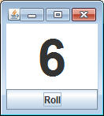
The ButtonListener
Previously we've created an object with instance fields so that when a button was pressed we could change those instance fields. Our goal is to change the GUI elements, which are already instance fields of our DiceRoller object. The solution is to make the DiceRoller class our ButtonListener.
1) Change the DiceRoller class' header to include 'implements ButtonListener' like before
2) In the constructor of the DiceRoller class, add the line 'button.addButtonListener(this);' The this is a way of passing the object we are currently a part of. No need to construct a new DiceRoller.
3) Now that DiceRoller is a ButtonListener, it needs the onButtonPress method that all ButtonListeners have. This GUI is supposed to generate a random number from 1 to 6 and change the label's text to that int. Add code to get a random number, and then use label's setText method to show the resulting number.
Run the program again, this time pressing the button should create a random number.
Assignments:
For each program, create an object that has the GUI elements as the instance fields. Start by creating the GUI, and then once it looks the way you want you can modify the code to respond to button presses.
1) Download each of the following dice images to your project folder:
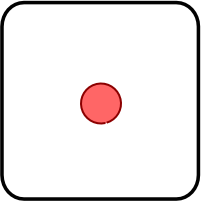
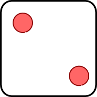
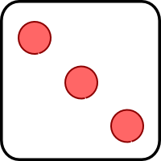
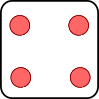
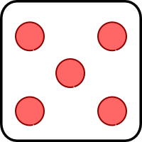
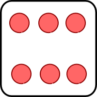
Create an object GUI that recreates the GUI below:
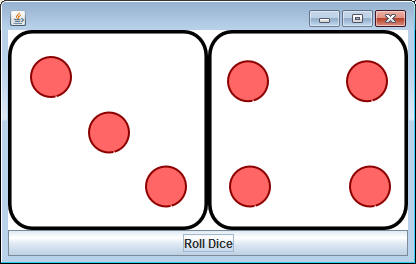
As instance fields you should have:
one SFrame
one SPanel
one SButton
two Labels
six Pictures (make sure that you load the images in the constructor)
Similar to before, create a simple static method that will launch the GUI. Once you've got the general layout correct you can work on the action. When the button is pressed, create two random numbers and then use a series of if statements to set the image of each label to the corresponding image.
When testing your program, make sure that it's possible to get a '1' and a '6' for both sides.
2) ColorClicker: Create the following GUI. Some useful methods might be SFrame's setBackgroundColor method and SButton's setColor method.
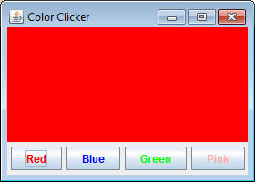
The colors that you choose are not important, but when you click each button, the background of the frame should change to that color.
3) TeacherPicker: Start by going to SRHSfalcons.org and downloading the images for all of your teachers. If one doesn't have a picture, it's ok to pick a different teacher that does have one. Create the following GUI, except with your teachers' names
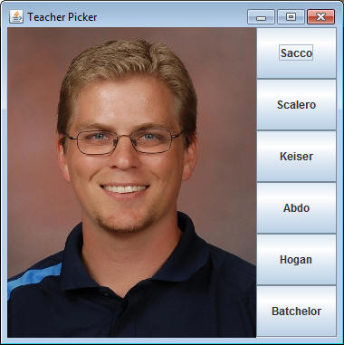
Modify the class so that each button that you press changes the label's image to the corresponding teacher's picture.
4) RockPaperScissors:
Start by downloading the following three images into your project:
Our goal for this program is to make a Rock-Paper-Scissors simulator using these images. The program will start out looking like this:
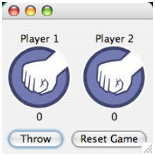
This layout is tricky. Go HERE to see how its done.
When the Throw button is pressed, two random numbers determine what each player "throws" and the appropriate image is shown.
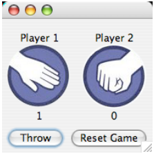
Those random numbers should also be used to determine which player wins. Notice that there is a label to keep score on the bottom. You will need to make sure that you have instance fields to keep track of each players score. You will increase the int and then make sure to change the label to the int's new value.
The first player to three is the winner. Once that occurs, the label at the NORTH of the layout will display who the winner is AND the throw button will no longer cause anything to change.
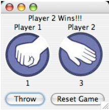
The reset will bring everything back to 0 and the throw button will be functional again.
| A Note About Detecting Buttons: Previously we've detected which button was pressed by checking the text that's on it. This can cause problems, especially when the text is changing. Now that we are using instance fields to hold our buttons, we can check to see which button was pressed in a much more direct manner. Let's say you've defined two instance fields private SButton throwButton, resetButton;When you define your onButtonPress method, you may simply compare the source button with the instance fields to tell which button was pressed. public void onButtonPress(SButton source)
{
if( source == throwButton )
{
...
This is a much more reliable way of checking to see if the SButton in
source is the same as the SButton in
throwButton. |